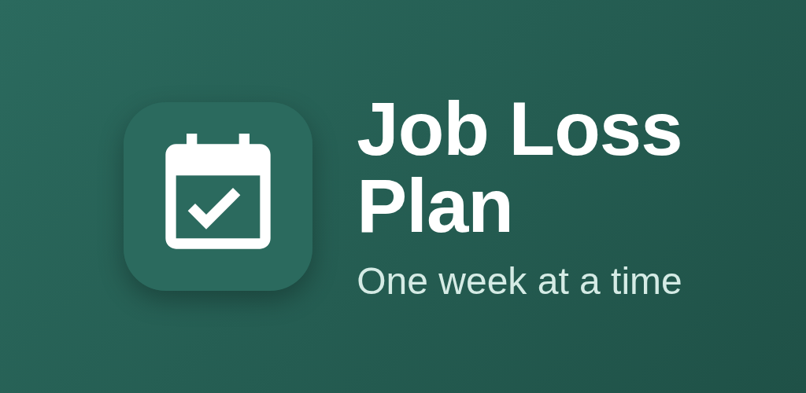
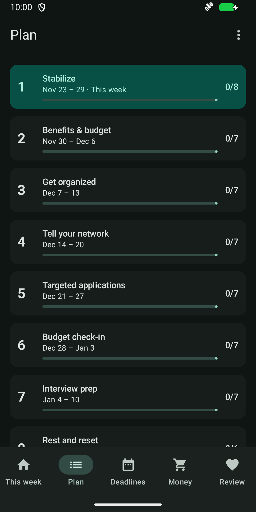
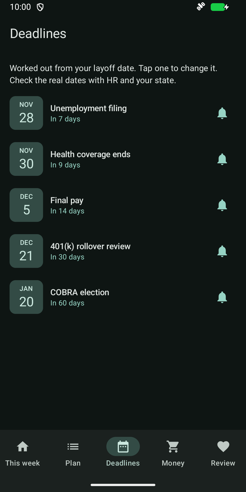
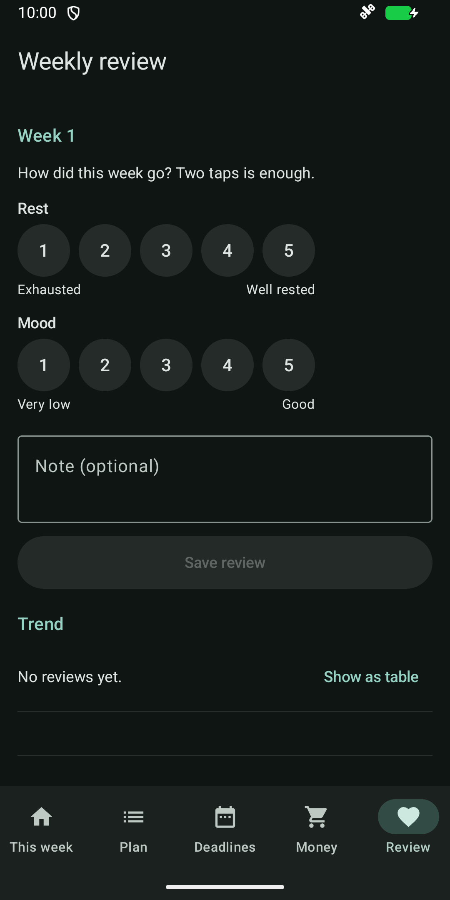
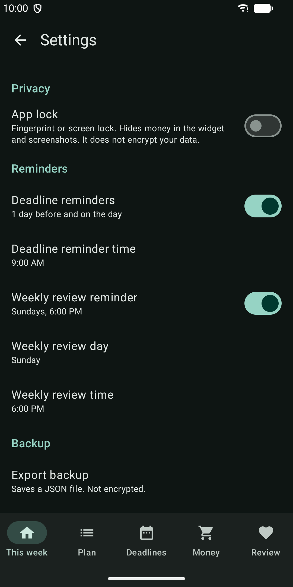

Plan tras despido: 12 semanas
¿Despedido? Lista de 12 semanas con plazos, presupuesto y cálculo de margen.







Acerca de la app
¿Te has quedado sin trabajo? Ve paso a paso, semana a semana. Job Loss Plan te da un plan claro de 12 semanas para el tiempo posterior a un despido en EE. UU. Cada semana tiene una lista breve sobre indemnización, prestaciones, presupuesto, solicitudes de empleo y descanso. Un repaso semanal rápido te ayuda a ver cómo estás. No hace falta crear una cuenta. Todo lo que introduces se queda en tu teléfono. QUÉ INCLUYE - Un plan para cada semana. "Esta semana" muestra lo importante ahora. El resumen muestra las 12 semanas y tu progreso. - Tareas bajo tu control. Edita, añade, elimina y reordena tareas, o restaura las tareas predeterminadas de una semana. - Plazos clave calculados a partir de tu fecha de despido: solicitud de desempleo, pago final, revisión del traspaso del 401(k), fin de la cobertura médica y el plazo para elegir COBRA. Puedes cambiar cualquier fecha para que coincida con tus documentos. - Recordatorios antes de cada plazo y un recordatorio del repaso semanal. Las notificaciones nunca muestran importes. - Un presupuesto mensual sencillo. Marca cada gasto como esencial o recortable y consulta ideas para reducir gastos. - Calculadora de margen. Mira cuántas semanas cubren tus ahorros, tu indemnización y la prestación por desempleo, y cuánto más si recortas gastos. - Repaso semanal. Valora tu descanso y tu ánimo de 1 a 5, añade una nota y observa la evolución. - Contador de solicitudes con objetivo semanal opcional. Es un simple recuento, no un gestor de candidaturas. - Tras la semana 12, añade 4 semanas más o empieza un plan nuevo. Los planes anteriores se conservan en modo solo lectura. - Widget de pantalla de inicio con la semana actual, tareas pendientes, próximo plazo y margen. - Copia de seguridad y restauración. Exporta tus datos a un archivo que elijas e impórtalos de nuevo más tarde. PRIVACIDAD - La app no usa internet. No incluye analíticas ni seguimiento. - Bloqueo opcional de la app con tu huella o el bloqueo de pantalla. Mientras está activo, se bloquean las capturas de las pantallas de dinero y el widget oculta tu margen. - Tus datos no se incluyen en las copias de seguridad en la nube. Los archivos de copia son texto plano, así que guárdalos en un lugar privado. PARA MÓVILES Y TABLETAS Los modos claro y oscuro siguen el sistema. Las zonas táctiles son grandes e incluye etiquetas para lectores de pantalla. En tabletas, el plan y el presupuesto se muestran en dos paneles. PLAN PRO Plan Pro es una compra única dentro de la app. Añade la exportación a PDF de tu plan, presupuesto y repasos, y tres plantillas más: Cambio de carrera, Puente freelance y Mudanza. El plan, los plazos, el presupuesto, el margen, los repasos, los recordatorios, el widget y la copia de seguridad no requieren compra. IMPORTANTE Job Loss Plan ofrece solo información general sobre EE. UU. No es asesoramiento legal ni financiero. Las normas cambian según el estado, así que consulta fuentes oficiales como el Departamento de Trabajo de EE. UU. y HealthCare.gov para tu situación.